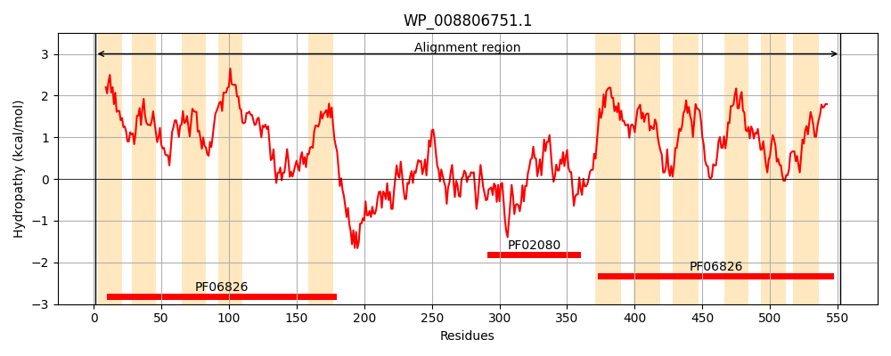
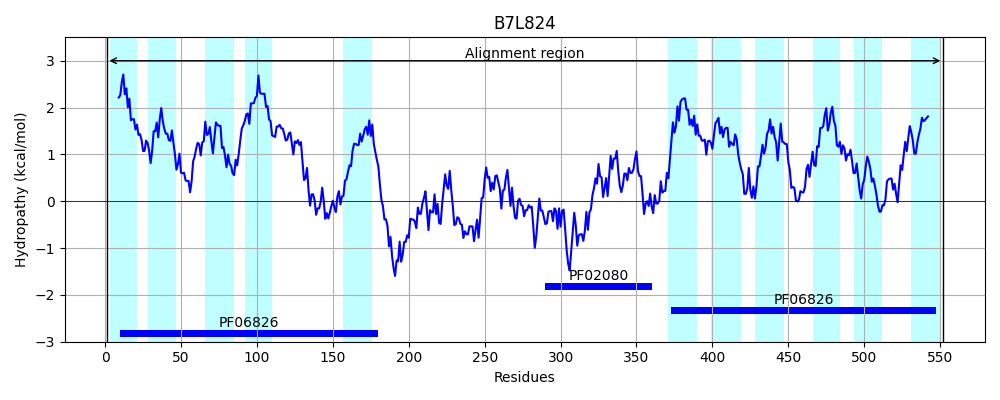
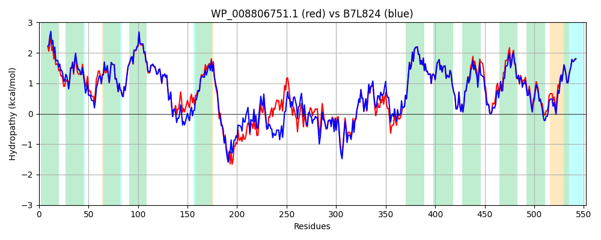

Hit Accession: B7L824
Hit TCID: 2.A.81.1.5
Hit Description: gnl|BL_ORD_ID|2027 gnl|TC-DB|B7L824|2.A.81.1.5 Putative transport protein YidE OS=Escherichia coli (strain 55989 / EAEC) GN=yidE PE=3 SV=1
Mach Len: 552
e:0.000000
Query TMS Count : 11
Hit TMS Count: 11
TMS-Overlap Score: 9.950000
Predicted Substrates:None
BLAST Alignment:
Score: 2398 , Bit scores: 928 bits, E-value: 0.0e+00, Alignment length: 552, Percentage identity: 85
Query: 1 MSEIALTVSVLALVAVVGLWIGNVKIRGVGFGIGGVLFGGIIVGHFVDQAGVALSSPMLHFIQEFGLILFVYTIGIQVGPGFFASLRVSGLRLNLFAILIVILGGLVTAVLHKLFNIPLPVVLGIFSGAVTNTPALGAGQQILRDLGVPFEVVDQMGMSYAMAYPFGICGILLTMWLVRLFFRINVEKEAQRFEESSGNGHANLHTINVRVENPNLNQMAIQDVPMLNSDNIVCSRLKRGELLMVPAPGTLIQAGDLLHLVGRPEDLHNAQLVIGQEVATSLSTRGTDLKVERVVVTNEKVLGKKIRDLHVKQRYDVVISRLNRAGVELVASSSASLQFGDILNLVGRQEAIDAVAAELGNAQQKLQQVQMLPVFIGIGLGVLLGSIPLFIPGFPAALKLGLAGGPLIMALILGRIGSIGKLYWFMPPSANLALRELGIVLFLAVVGLKSGGDFVATLTQGEGLSWIAYGIFITAIPLLTVGILARMLAKMNYLTLCGMLAGSMTDPPALAFANNLHATSGAAALSYATVYPLVMFLRIITPQLLAVLFWGL 552
MS+IALTVS+LALVAVVGL+IGNVK RG+G GIGGVLFGGIIVGHFV QAG+ LSS MLH IQEFGLILFVYTIGIQVGPGFFASLRVSGLRLNLFA+LIVI+GGLVTA+LHKLF+IPLPVVLGIFSGAVTNTPALGAGQQILRDLG P E+VDQMGMSYAMAYPFGICGIL TMW++R+ FR+NVE EAQ+ E S NG A + TIN+RVENPNL+ +AI+DVP+LN D I+CSRLKR E L VP+P T+IQ GDLLHLVG+P DLHNAQLVIGQEV TSLST+GTDL+VERVVVTNE VLGK+IRDLH K+RYDVVISRLNRAGVELVAS SLQFGDILNLVGR AIDAVA LGNAQQKLQQVQMLPVFIGIGLGVLLGSIP+F+PGFPAALKLGLAGGPLIMALILGRIGSIGKLYWFMPPSANLALRELGIVLFL+VVGLKSGGDFV TL GEGLSWI YG ITA+PL+TVGILARMLAKMNYLT+CGMLAGSMTDPPALAFANNLH TSGAAALSYATVYPLVMFLRIITPQLLAVLFW +
Sbjct: 1 MSDIALTVSILALVAVVGLFIGNVKFRGIGLGIGGVLFGGIIVGHFVSQAGMTLSSDMLHVIQEFGLILFVYTIGIQVGPGFFASLRVSGLRLNLFAVLIVIIGGLVTAILHKLFDIPLPVVLGIFSGAVTNTPALGAGQQILRDLGTPMEMVDQMGMSYAMAYPFGICGILFTMWMLRVIFRVNVETEAQQHESSRTNGGALIKTINIRVENPNLHDLAIKDVPILNGDKIICSRLKREETLKVPSPDTIIQLGDLLHLVGQPADLHNAQLVIGQEVDTSLSTKGTDLRVERVVVTNENVLGKRIRDLHFKERYDVVISRLNRAGVELVASGDISLQFGDILNLVGRPSAIDAVANVLGNAQQKLQQVQMLPVFIGIGLGVLLGSIPVFVPGFPAALKLGLAGGPLIMALILGRIGSIGKLYWFMPPSANLALRELGIVLFLSVVGLKSGGDFVNTLVNGEGLSWIGYGALITAVPLITVGILARMLAKMNYLTMCGMLAGSMTDPPALAFANNLHPTSGAAALSYATVYPLVMFLRIITPQLLAVLFWSI 552 | Protein Hydropathy Plots: |
|---|
|  |  |
Pairwise Alignment-Hydropathy Plot:
|
|---|
|  |